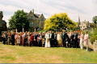

Having made mistakes (and hopefully learnt from them) in our first house, we appear to have moved on to another one. I'm not certain which one was in a worse condition at the start, but we shall see how long it takes us to sort this one!
Daft animals - but I'm not certain whether that's us or them!
Cambridge Botanic Gardens are fantastic. They used to have free entry on a Wednesday morning, which was fantastic, and meant that I could wander there whenever I wanted to. Now, unfortunately, they've stopped that, but it's still beautiful and I keep thinking about getting a pass for the year.
Our garden and road in the snow in the winter - this scientist is turning far too arty!
The continuing saga of the DIY jobs - it's improving, and our living room looks so funky now :o)
Matt's business trip was a good holiday for Jude, and a chance to swoon over the fantastic architecture in Vienna - we have blocks of flats - they definitely have apartments - fantastic stuff!
Our wedding photographs are still here - unfortunately, these haven't yet been sorted with a decent program - I'll get round to this soon...
And for fun, for those of you who were there, spot yourself in this photograph if you can!

{kind=link}